Mirassol
Clube atual
6 jogos · 0 gols
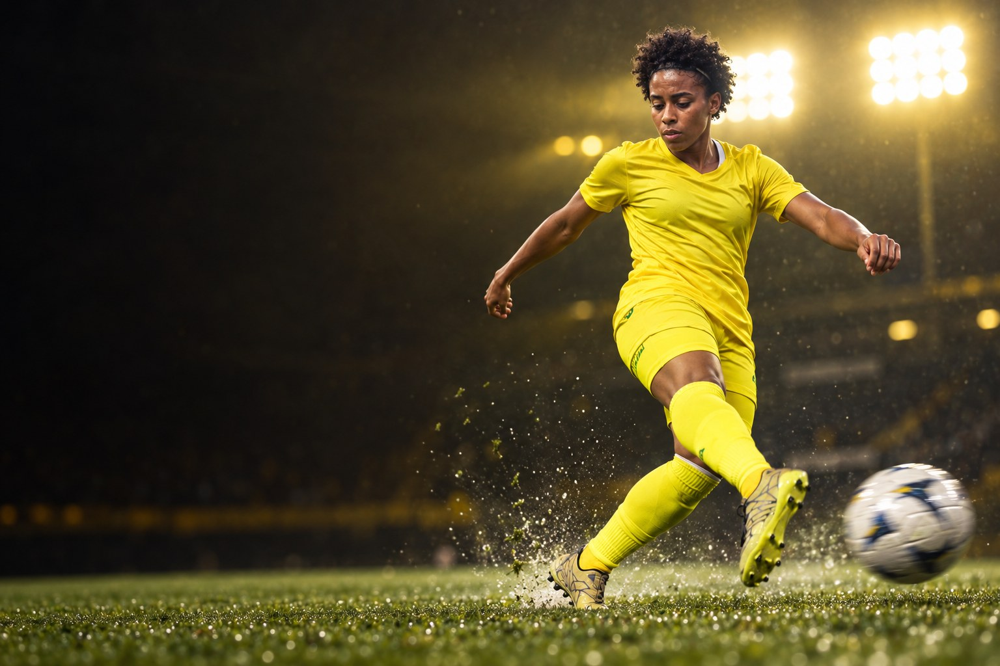
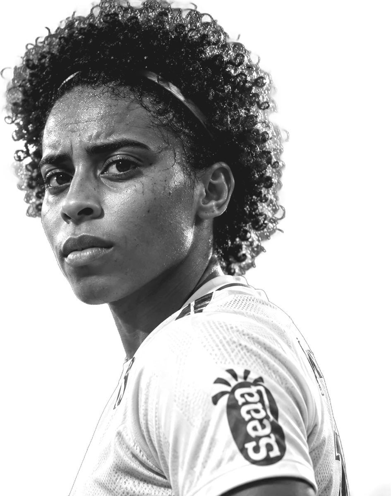
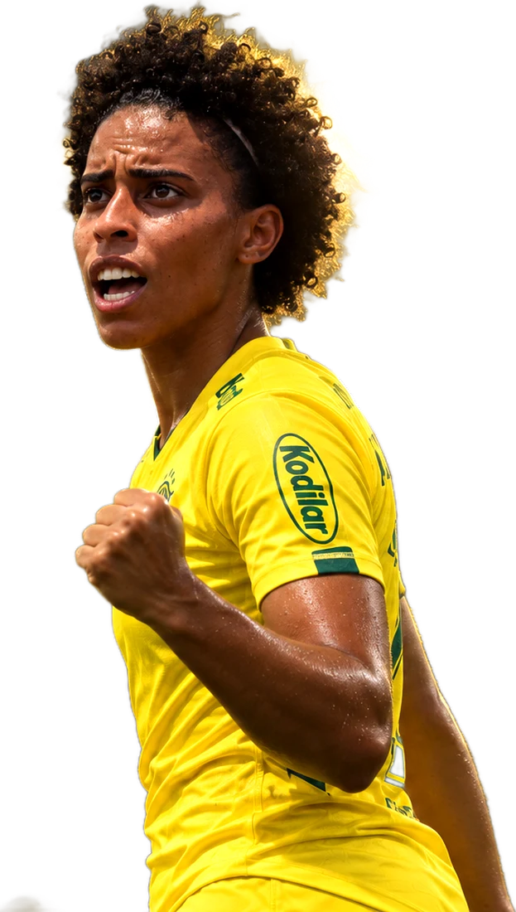
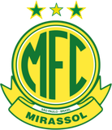
Sobre
Naiane Alice Aparecida Brozinga é futebolista profissional e atua como ponta direita. Clube atual: Mirassol.
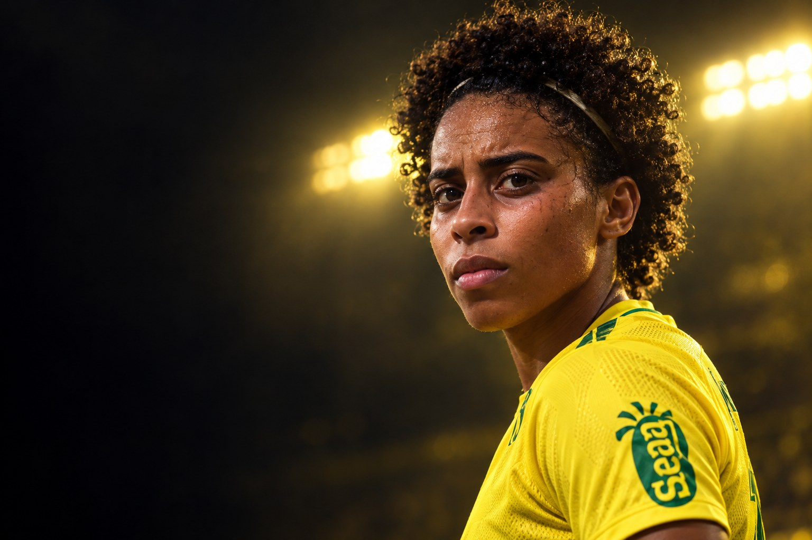
“É muito importante para mim estar representando esse clube, que é um dos gigantes do Brasil. É até emocionante falar, porque para mim é realmente a realização de um sonho, eu esperei muito por isso.”Naiane, ao site do Fluminense, na contratação, em janeiro de 2024
Perfil
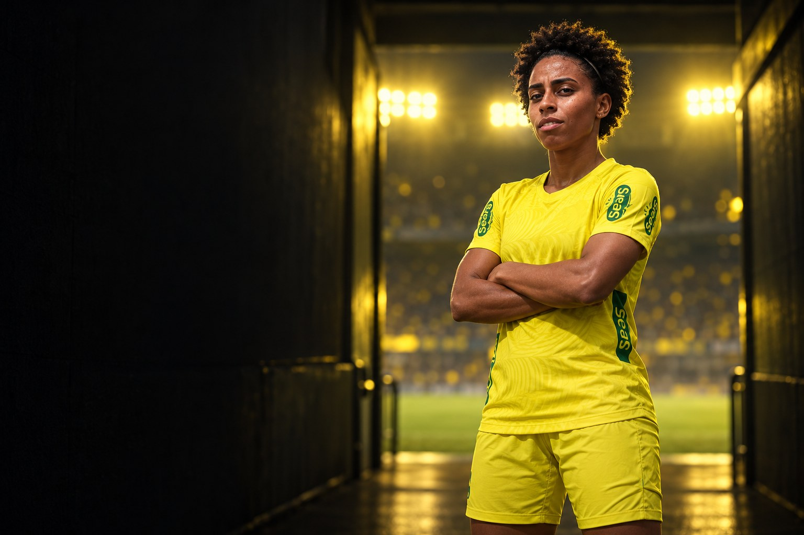
Carreira em números
Carreira
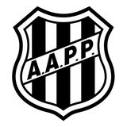
2020Ponte Preta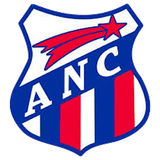
2021Napoli-SCClubes em destaque
6 jogos · 0 gols
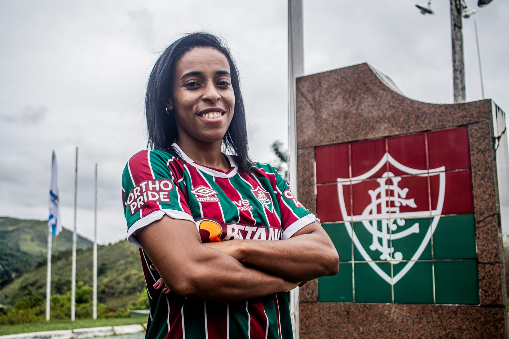
17 jogos · 1 gols
Conquistas
Galeria
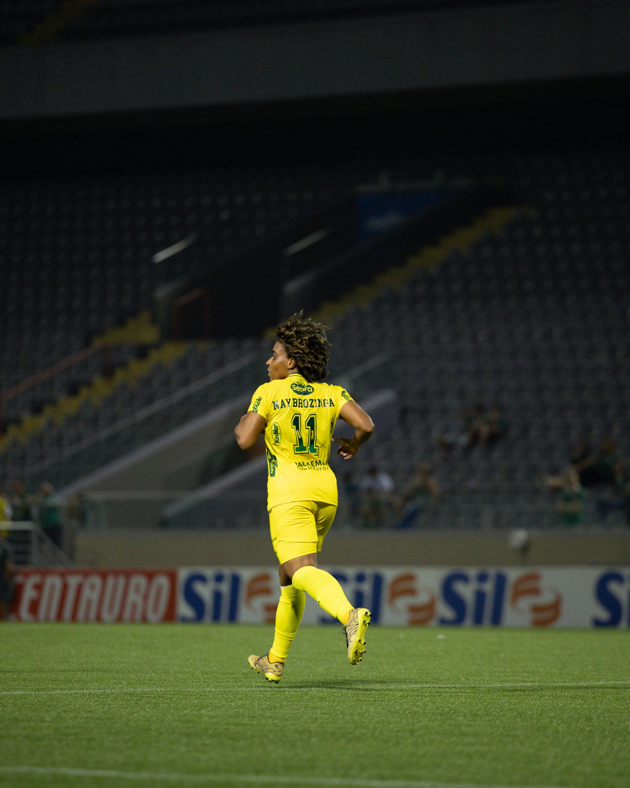
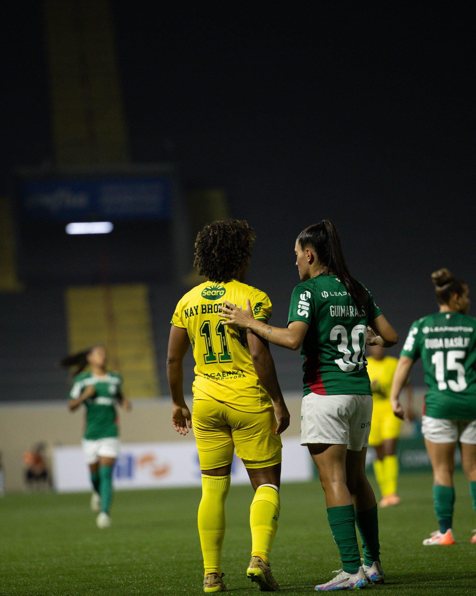
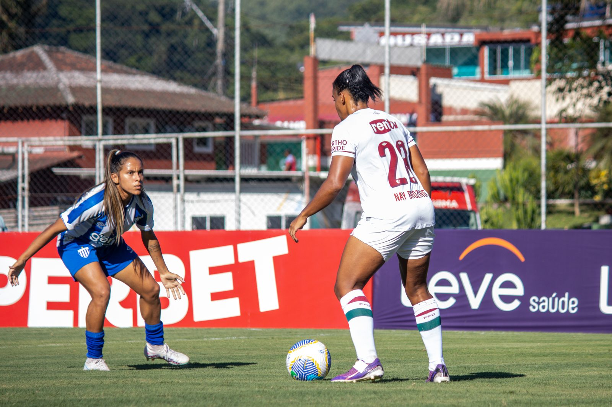
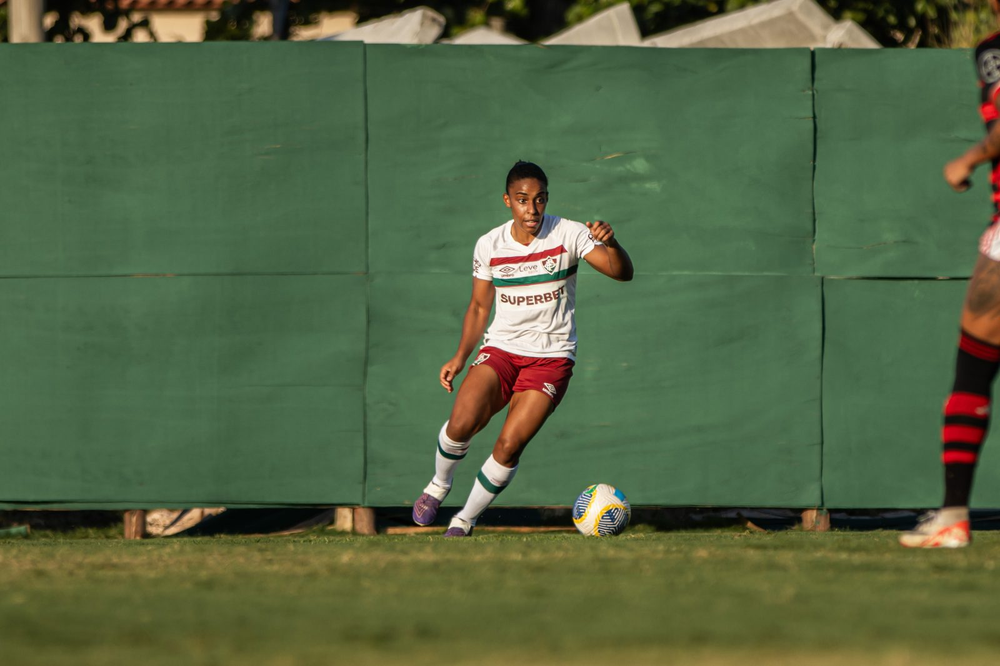
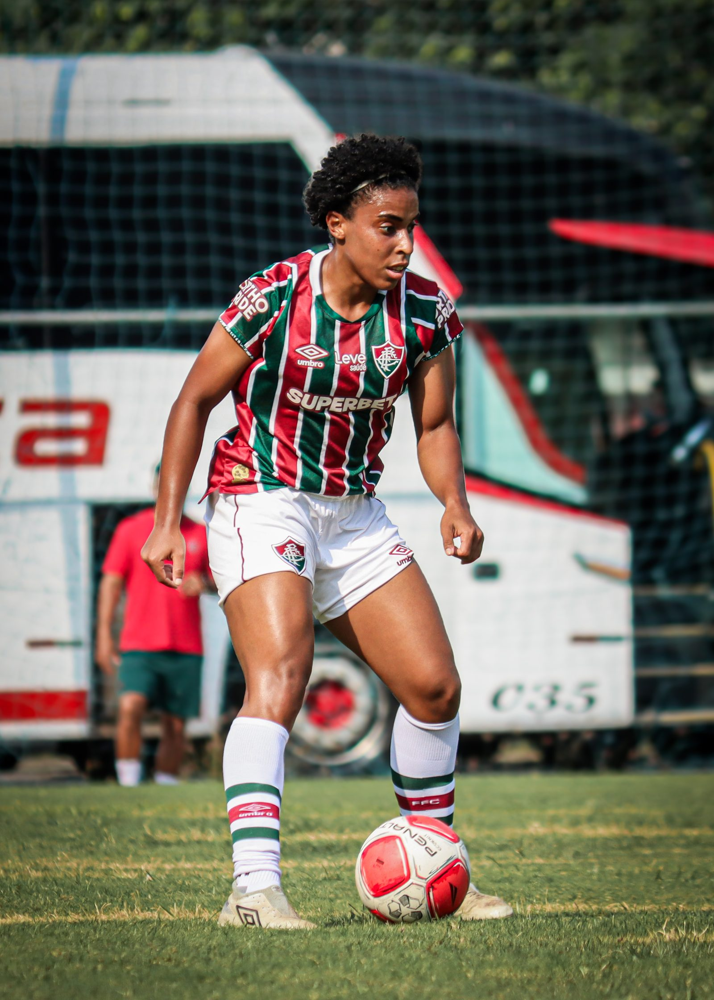
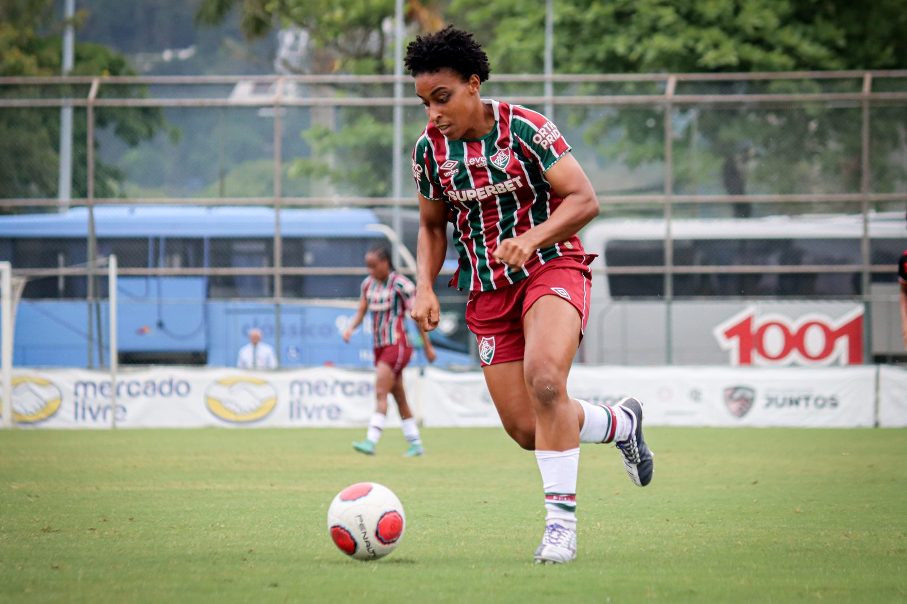
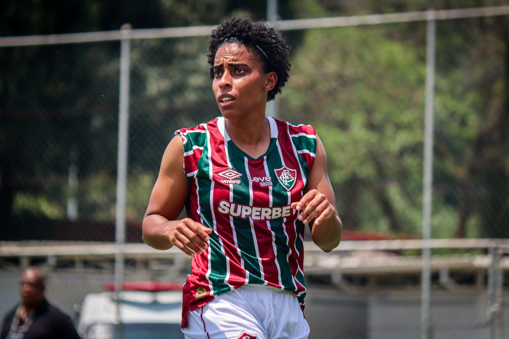
Currículo esportivo
| Temporada | Clube | País | Jogos | Gols | Assistências |
|---|---|---|---|---|---|
| 2026 | Mirassol | 6 | 0 | 0 | |
| 2025 | 4 | 1 | 0 | ||
| 2025 | Fluminense | – | – | – | |
| 2024 | Fluminense | 17 | 1 | 0 | |
| 2023 | 13 | 2 | 0 | ||
| 2022 | 10 | 4 | 0 | ||
| 2021 | 10 | 0 | 0 | ||
| 2021 | Napoli-SC | 13 | 1 | 0 | |
| 2020 | 5 | 2 | 0 | ||
| 2020 | Ponte Preta | 15 | 1 | 0 |
Jogos, gols e assistências conforme a base estatística Ogol. O clube atual segue o anúncio oficial do clube.
Na mídia
Contato profissional
Assuntos profissionais, comerciais e de carreira: fale com a X Soccer, que faz a gestão da carreira da atleta.
Mídia kit
International profile